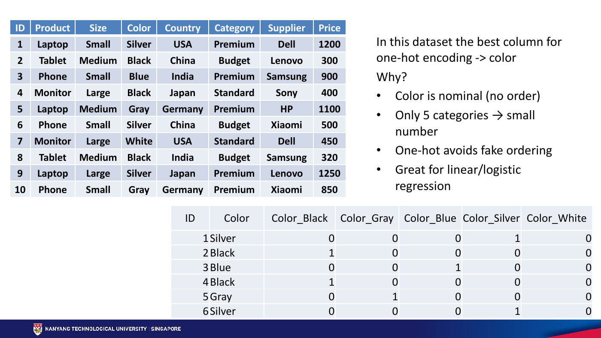
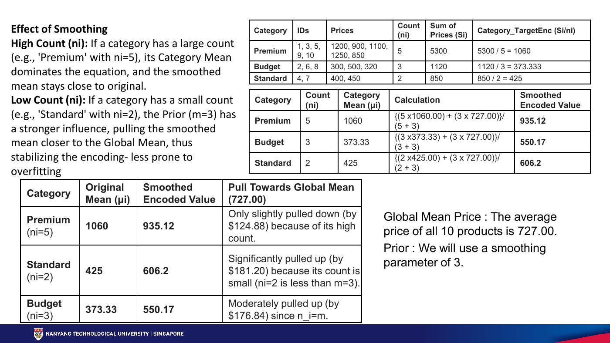
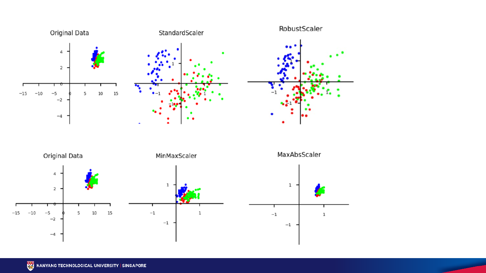
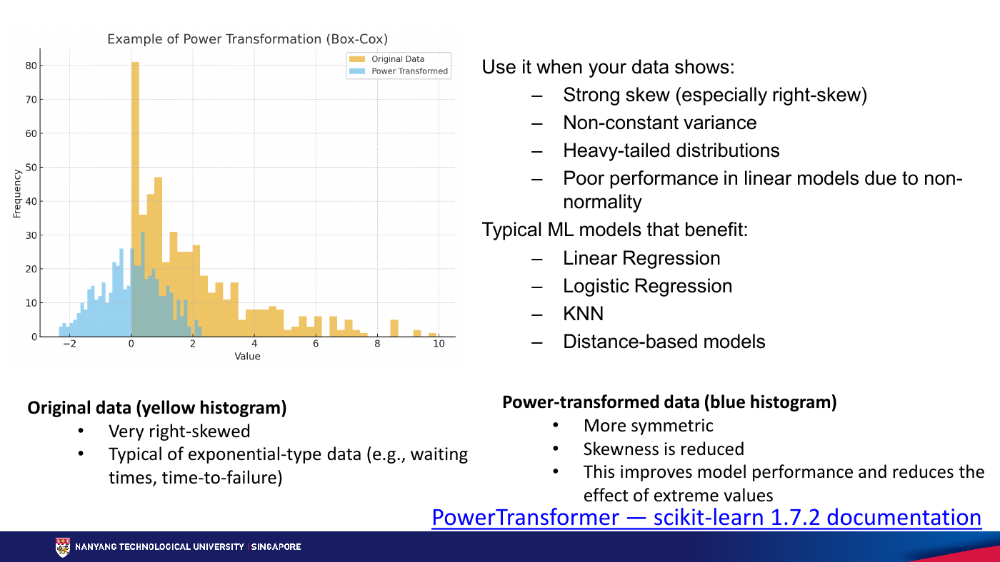
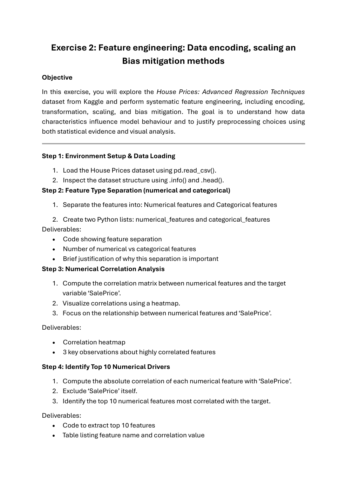
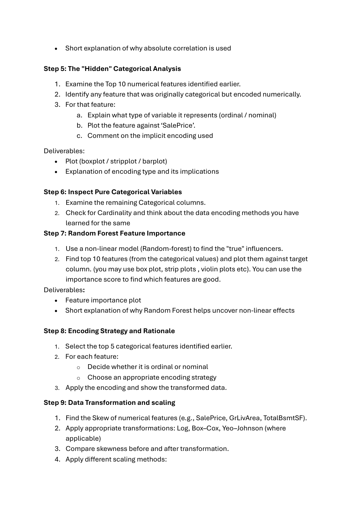
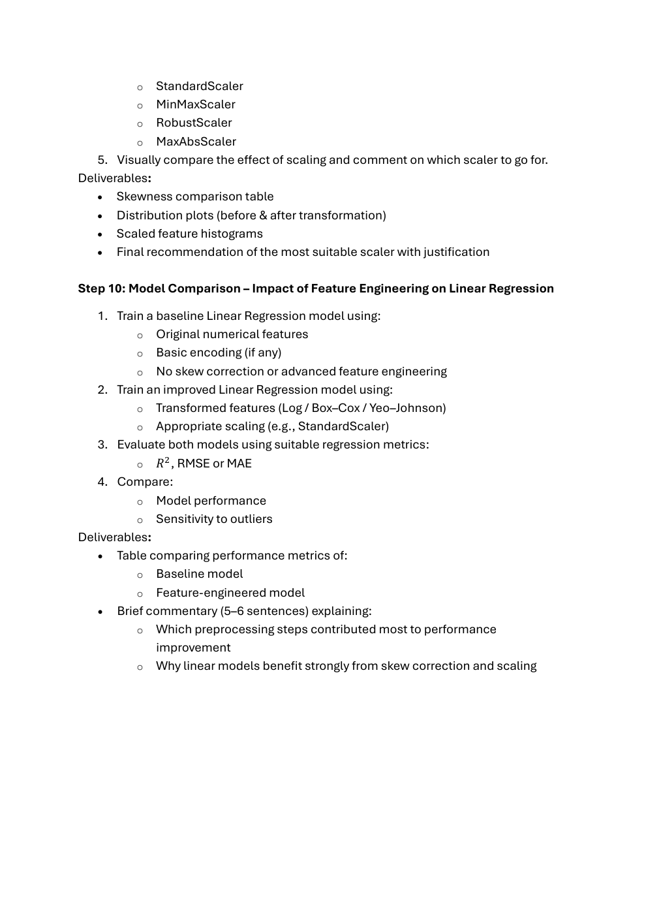

第二周：特征工程、编码、缩放与偏差缓解
沿老师的顺序，把原始类别和数值变成可用的模型输入，再检查预处理是否泄漏答案、是否改变了群体表现。配合商品表与 House Prices 练习，关注每一步的输入、输出和选择依据。
来源：Dr. Smitha K G，Week2_Feature engineering encoding, scaling and bias mitigation methods_detail.pdf（38 页）；Exercise 2_week2.pdf（3 页）；Data_encoding_methods.ipynb、power_transform_demo.ipynb 与 Week_2_Saturday.ipynb。页码按 PDF 页序；保留老师的主题顺序。“学习补充 / 核对说明”区别于原课件表述。
Data encoding｜先认清变量类型
本章图表 / 方法：六类编码与商品表（课件第 2–12、18–20 页；Data_encoding_methods.ipynb）。
编码把类别转换为模型可使用的数值表示，结果不一定是整数。先问类别有没有自然顺序，再问有多少不同类别（cardinality），最后结合模型与未知类别处理选择方法。
| 方法 | 课件例子 / 转换 | 适用与代价 |
|---|---|---|
| Ordinal | Small → 1，Medium → 2，Large → 3 | 保留自然次序，但不证明大小差距等距。sklearn OrdinalEncoder 默认从 0 开始；LabelEncoder 通常用于目标 y |
| One-hot | Color → Color_Black、Color_Blue 等五列 | 无序且类别较少时直观；高基数增加列数。带截距线性模型可考虑 drop="first"，不是所有模型都必须删一列 |
| Count / Frequency | Silver 出现 3 次 → 3 或 3/10 | 用一列表达常见程度；Silver 与 Black 都为 0.3，会丢失类别区别 |
| Binary | 六家供应商先编号 1–6，再写成 001–110 | 本例 3 列；压缩维数，但位之间的人工关系需要模型处理 |
| Target / Mean | Category → 该组平均 Price | 利用目标信息，需平滑和折外编码，详见下一节 |
| Hash | 供应商 → hash(name) % K 指定的桶 | 固定 K 列，适合高基数；不同类别可能碰撞，无法唯一反推原类别 |


学习补充：第 20 页另提 Effect Encoding。它是对比编码，例如三个类别用两列表示 A=(1,0)、B=(0,1)、基准 C=(−1,−1)，不是 binary encoding，也不是 target encoding。具体系数解释依赖所用模型与对比约定。
可运行小例子：训练时建立映射，预测时复用
import pandas as pd
from sklearn.preprocessing import OrdinalEncoder, OneHotEncoder
train = pd.DataFrame({"Size": ["Small", "Medium", "Large", "Small"],
"Color": ["Silver", "Black", "Blue", "Silver"]})
test = pd.DataFrame({"Size": ["Medium"], "Color": ["White"]})
ordinal = OrdinalEncoder(categories=[["Small", "Medium", "Large"]],
handle_unknown="use_encoded_value", unknown_value=-1)
print(ordinal.fit_transform(train[["Size"]]).ravel()) # [0, 1, 2, 0]
one_hot = OneHotEncoder(handle_unknown="ignore", sparse_output=False)
encoded = one_hot.fit_transform(train[["Color"]])
print(pd.DataFrame(encoded, columns=one_hot.get_feature_names_out(),
index=train.index))
print(one_hot.transform(test[["Color"]])) # 未见过 White：全部为 0
frequency = train["Color"].value_counts(normalize=True)
print(test["Color"].map(frequency).fillna(0)) # 未知类别默认 0输入双中括号保留二维表；sparse_output=False 返回密集矩阵，便于小表阅读，大规模 one-hot 应考虑稀疏输出。未知类别全零与缺失值不是同一含义，应明确策略。不能在测试集重新 fit，否则列和映射可能改变。
# 课件 Notebook 使用的扩展库：环境需已安装 category-encoders。
import category_encoders as ce
import pandas as pd
suppliers = pd.DataFrame({"Supplier": ["Dell", "Lenovo", "Samsung", "Sony", "HP", "Xiaomi"]})
binary = ce.BinaryEncoder(cols=["Supplier"])
print(binary.fit_transform(suppliers))
hashing = ce.HashingEncoder(cols=["Supplier"], n_components=3)
print(hashing.fit_transform(suppliers))n_components=3 固定哈希输出维数，调大通常减少碰撞但增加内存；第 19 页 hash 值是课堂假设，不应期待真实库输出同一桶位置。多字段编码还需区分字段名，避免不同字段同名类别无意混合。
Target encoding & Regularization｜避免把答案放进特征
本章图表 / 方法：目标均值、Bayesian 平滑与 Out-of-Fold（第 13–17、21 页）。
目标为连续 Price 时，类别编码是组内均价；目标为 0/1 时是组内正例比例。课件 Premium 有 5 行、总价 5300，编码为 1060；Budget 为 1120/3≈373.33；Standard 为 850/2=425。只有一个样本的类别会直接暴露自己的目标，形成严重过拟合风险。
平滑公式：encodedᵢ = (nᵢμᵢ + mμglobal)/(nᵢ+m)。m 是全局均值的伪样本数量，越大越向全局均值收缩；n 越大，组内均值权重越高。10 件商品总价 7270，全局均值 727；取 m=3，Premium 为 935.125，Budget 为 550.1667，Standard 为 606.2。


平滑不等于防泄漏。先留出测试集；训练集内部再分 K 折，每一折用其他 K−1 折的目标统计来编码；给测试集编码时，使用完整训练集学到的映射，绝不读取测试标签。时间序列或重复主体应使用符合时间 / 分组约束的拆分。
import pandas as pd
from sklearn.preprocessing import TargetEncoder
X_train = pd.DataFrame({"Category": ["Premium", "Budget", "Premium", "Standard",
"Budget", "Standard", "Premium", "Budget",
"Premium", "Premium"]})
y_train = [1200, 300, 900, 400, 500, 450, 1100, 320, 1250, 850]
X_test = pd.DataFrame({"Category": ["Premium", "Unknown"]})
encoder = TargetEncoder(target_type="continuous", smooth=3, cv=2)
train_encoded = encoder.fit_transform(X_train, y_train) # 内部交叉拟合
print(train_encoded)
print(encoder.transform(X_test)) # 未知类别使用训练目标全局均值此例明确使用 sklearn.preprocessing.TargetEncoder。官方文档说明 fit_transform(X,y) 有内部交叉拟合，不能替换成 fit(X,y).transform(X) 来编码训练数据。
category_encoders.TargetEncoder 与 sklearn 的同名类不同，前者的 min_samples_leaf / smoothing 使用 sigmoid 权重，不能直接当作上述 m 公式，fit_transform 也不能默认理解为折外编码。课件的加噪声是正则化选项，不能代替独立划分或 OOF；不要把 smoothing=0 当作跨库通用的“关闭泄漏”开关。Data / Feature scaling｜统一尺度
本章图表 / 方法：四种 scaler、性质对照与散点图（第 22–25 页）。
距离模型会把工资差 10000 与年龄差 10 当成不同数量级的差异；缩放使量纲较少主导数值计算。它改变中心和尺度，不会自动让所有特征同样重要，也不会把偏态变成正态。
| 方法 | 公式（默认设置，非退化列） | 用途与边界 |
|---|---|---|
| StandardScaler | (x−μ)/σ | 均值 0、方差 1；对异常值敏感，无固定输出范围，不要求原始特征正态 |
| MinMaxScaler | (x−min)/(max−min) | 训练范围通常映射为 [0,1]；新数据可越界，极端值会挤压其余样本 |
| RobustScaler | (x−median)/IQR | 中位数与四分位距更稳健；不删除异常值，不保证方差 1，也不修正偏态 |
| MaxAbsScaler | x/max(|x|) | 保留零值，适合稀疏特征；极端值仍影响尺度，新数据也可能超出 [−1,1] |


import pandas as pd
from sklearn.preprocessing import StandardScaler, MinMaxScaler, RobustScaler, MaxAbsScaler
X_train = pd.DataFrame({"tax": [1000., 1500., 2000., 2500., 50000.]})
X_test = pd.DataFrame({"tax": [60000.]})
scalers = {"Standard": StandardScaler(), "MinMax": MinMaxScaler(),
"Robust": RobustScaler(), "MaxAbs": MaxAbsScaler()}
for name, scaler in scalers.items():
fitted = scaler.fit_transform(X_train)
print(name, fitted.ravel(), "新样本:", scaler.transform(X_test).ravel())μ、σ、极值与分位数都只从训练集学。测试税额 60000 大于训练最大 50000，MinMax 输出大于 1 是正常现象。StandardScaler 的 σ 使用总体分母 n；pandas std() 默认用 n−1，核对时需统一口径。
树模型按阈值分裂，通常不需要缩放。稀疏矩阵使用 StandardScaler 时避免中心化（with_mean=False）；默认减均值会破坏稀疏性。详见 StandardScaler 文档。
Power transformation｜改变分布形状
本章图表 / 方法：偏度、Log、Box–Cox、Yeo–Johnson（第 26–29 页；power_transform_demo.ipynb）。
右偏是右侧长尾，左偏是左侧长尾；偏度描述不对称，不等于异常值比例。偏度为 0 也不保证正态，对称的双峰分布仍可能不是钟形。
| 变换 | 表达 / 定义域 | 应判断什么 |
|---|---|---|
| Log / log1p | log(x) 要求 x>0；log(1+x) 要求 x>−1 | 常用于右长尾；log1p 能保留零，但不是任意负值通用方案 |
| Box–Cox | λ≠0 时 (x^λ−1)/λ；λ=0 时 log(x)，要求 x>0 | λ 从训练数据拟合；不能直接传入 0 或负数 |
| Yeo–Johnson | 按正负区间分段，可接受正、零、负值 | 省去正值限制，但不保证任何分布都变成正态 |


import pandas as pd
from sklearn.preprocessing import PowerTransformer, StandardScaler
from sklearn.pipeline import make_pipeline
X_train = pd.DataFrame({"balance": [-200., 0., 100., 300., 10000., 30000.]})
X_test = pd.DataFrame({"balance": [500., 40000.]})
preprocess = make_pipeline(
PowerTransformer(method="yeo-johnson", standardize=False),
StandardScaler(),
)
transformed = preprocess.fit_transform(X_train)
print(transformed)
print(preprocess.transform(X_test))
print("学到的 λ:", preprocess[0].lambdas_)PowerTransformer 文档：默认 standardize=True 会在幂变换后再标准化；此处设 False，以便明确分开两步。先做偏态变换再缩放是常见流程，但不是所有数据和模型都必须做。
power_transform_demo Notebook 怎么读
演示生成 1000 行：收入与月消费为右偏分布，账户余额混入极端值并可能为负，信用使用率有界，交易次数为计数，年龄近似对称。先比较账户余额经过四种 scaler 后的偏度，再对收入试 Log / Box–Cox，对余额试 Yeo–Johnson，最后观察消费额 Log → StandardScaler 的三张直方图。
核对说明：原 Notebook 中“StandardScaler 永远不能用于金融数据”过于绝对；应根据分布、异常值与模型判断。已有明确比例含义的信用使用率也不一定需要再次 MinMax；真实业务是否可能超过 1，仍要核对字段定义。模拟数据的形状不代表真实业务分布。
地下室面积为 0 时
House Prices 的 TotalBsmtSF=0 可能表示没有地下室。可增加 HasBsmt 标志，并只在正面积样本上拟合 Box–Cox，或者对整列使用 Yeo–Johnson。前者保留“存在性 / 大小”两个含义，后者流程更简单；必须先确认缺失值和零的业务语义，不能宣称某个方案对所有模型必胜。
Advanced Feature Engineering
本章图表 / 方法：派生变量、TF-IDF、Word2Vec 与 PCA（第 30 页及 Saturday Notebook）。
| 方法 | 输入 → 输出 | 选择边界 |
|---|---|---|
| Derived features | 出生日期 → 年龄；建筑年与销售年 → 房龄 | 用预测时可获得的信息；若预测 Price，Price/Area 会泄漏目标 |
| TF-IDF | 文档词频及语料频率 → 稀疏词权重 | 突出文档内常见、语料中较少见的词；不等于完整语义理解 |
| Word2Vec | 词上下文 → 稠密向量 | 相似语境形成相关表示；不保证每个语义关系都准确 |
| PCA | 多个数值列 → 主成分 | 保留较大方差方向，不保证这些方向最能预测目标；常需先考虑尺度 |
# 学习补充：df 是已读入的 House Prices 表；不含目标信息的派生特征。
df["HouseAge"] = df["YrSold"] - df["YearBuilt"]
df["YearsSinceRemodel"] = df["YrSold"] - df["YearRemodAdd"]
df["IsRemodeled"] = (df["YearBuilt"] != df["YearRemodAdd"]).astype(int)
df["IsNewHouse"] = df["HouseAge"].between(0, 1).astype(int)
df["EffectiveAge"] = df[["HouseAge", "YearsSinceRemodel"]].min(axis=1)
df["TotalSF"] = df["TotalBsmtSF"] + df["1stFlrSF"] + df["2ndFlrSF"]
df["TotalBathrooms"] = (df["FullBath"] + 0.5 * df["HalfBath"]
+ df["BsmtFullBath"] + 0.5 * df["BsmtHalfBath"])
df["HasGarage"] = (df["GarageArea"] > 0).astype(int)先检查缺失和负房龄，再生成标志；缺失值不应无声地变为“没有车库”。EffectiveAge 是启发式近似，不是房子真实年龄。TotalSF 与全部组成列同时进入线性模型会产生精确线性依赖；相关系数变大也不证明新特征必然改善测试预测。
Impact of Bias on Fairness & Generalization
本章图表 / 方法：四类偏差、跨群体误差与领域变化（第 31–34 页）。
| 偏差 | 课件例子 | 检查方向 |
|---|---|---|
| Historical bias | 招聘记录延续过去不平等 | 历史结果是否应该被当作未来目标 |
| Sampling bias | 人脸数据中过度代表某类人群 | 各群体样本量、场景与覆盖范围 |
| Label bias | 审批机制影响被记录的标签 | 谁能获得标签，标注标准是否一致 |
| Measurement bias | 设备对不同人群测量质量不同 | 误差、缺失机制和测量流程 |
偏差也影响泛化：主要用成人训练的诊断模型可能不适用于儿童；用雪背景区分狼与狗是学习捷径；晴天训练的驾驶模型可能在雨夜失效。这些问题不能只靠提高总体 accuracy 发现。
| 指标 | 公式 | 能回答的问题 |
|---|---|---|
| FPR | FP/(FP+TN) | 真实负例被误判为正例的比例 |
| FNR | FN/(FN+TP) | 真实正例被漏判的比例 |
| Demographic parity | 比较各群体 P(预测为正 | 群体) | 不同群体获得正向预测的比例是否接近 |
学习补充：分母为 0 时应标记指标不可估计，并报告群体样本数。正类的业务含义必须先定义；贷款“批准”与“违约”作为正类时，误差含义完全不同。选择率相同不代表误差率相同，不同公平目标也可能有冲突。
Bias mitigation techniques
本章图表 / 方法：重加权、重采样、SMOTE、ADASYN 与 SMOTE-ENN（第 35–38 页）。
| 方法 | 做什么 | 风险与检查 |
|---|---|---|
| Reweighing | 改变样本对训练损失的贡献，不增加行 | 权重应有明确目标；不是所有估计器都接受 sample_weight，代理变量偏差仍可能存在 |
| Oversampling | 复制或合成少数样本 | 可能重复噪声、过拟合；类别平衡不自动保证群体公平 |
| SMOTE | 在少数类邻居之间插值：xnew=xᵢ+t(xⱼ−xᵢ)，0≤t≤1 | 边界附近可能合成不合理点；普通数值插值不能直接用于任意类别码 |
| ADASYN | 在难学、附近多数类较多的位置生成更多样本 | 更关注困难边界，也可能放大噪声；不保证优于 SMOTE |
| SMOTE-ENN | 先 SMOTE，再用邻域规则清理不一致点 | 可能删除原始样本，需记录哪些群体和样本被移除 |
先划分，再只对训练集重采样。交叉验证中每一折也应单独处理；测试集保持原始分布，否则指标不再描述部署时的表现。群体样本不均衡和目标类别不均衡是不同问题，不能把少数标签自动当作弱势群体。
完整流程还包括更具代表性的数据、一致标注、公平性约束、跨群体评估、定期审计和必要的人类复核。本周练习标题包含 bias mitigation，但练习正文没有完整公平性实验；不要将 House Prices 的缩放结果当作已验证的公平改进。
Exercise 2｜House Prices 十步练习
本章图表 / 方法：Exercise 2_week2.pdf 三页原题 + Week_2_Saturday.ipynb；每行是一套房屋，SalePrice 是目标。
查看原题第 1–3 页






| 原题步骤 | 解析路径与交付项 | 检查标准 / 常见误区 |
|---|---|---|
| 1 Load data | 读取 train.csv，展示 head 和 info | 相对路径按内核工作目录；先确认数据版本与一行含义 |
| 2 Feature separation | 按 dtype 初分数值 / 类别，输出两份列名及数量 | SalePrice 是 y；Id 是标识，不应因它是整数就当作有意义特征 |
| 3 Correlation | 数值特征与 SalePrice 热图，写 3 条数据支持的观察 | 仅描述线性关联，不写成因果 |
| 4 Top 10 numerical | 排除目标后，按相关系数绝对值排名，表中保留正负号 | 强负相关也重要；目标自身相关为 1，必须排除 |
| 5 Hidden categorical | 检查 top 10 中数值存储的有序类别，画箱线 / strip 图 | 例如 OverallQual 是等级；以实际列与结果为准，不能只按 dtype 判定 |
| 6 Pure categorical | 统计 nunique 与频数，识别高基数和稀有类别 | 缺失类别的含义要查字段说明 |
| 7 Random Forest | 编码 / 填补后训练，画重要性与 top 10 类别特征对目标的图 | 重要性不等于“真实因果”；one-hot 需映射回原始字段，注意高基数偏好 |
| 8 Top 5 encoding | 说明五个选定变量的 ordinal / nominal 性质、方法与转换后表格 | 次序手工声明；映射只在训练折学习；不在此预填你的五个答案 |
| 9 Transform & scale | 偏度前后表、分布图、四种缩放图与选择理由 | Box–Cox 正值限制；默认 PowerTransformer 已标准化；避免把 y 的派生列放入 X |
| 10 Model comparison | 相同划分比较 baseline / 改进方案；输出 R²、RMSE / MAE 和 5–6 句解释 | 同一目标尺度、训练内拟合、对未见样本评估；不能用固定文案宣布成功 |
步骤 3–4 的代码骨架：排名应在训练数据上决定
import pandas as pd
from sklearn.model_selection import train_test_split
house = pd.read_csv("train.csv")
train, test = train_test_split(house, test_size=0.3, random_state=42)
X_train = train.drop(columns=["SalePrice", "Id"], errors="ignore")
y_train = train["SalePrice"]
numerical_features = X_train.select_dtypes(include="number").columns.tolist()
categorical_features = X_train.select_dtypes(exclude="number").columns.tolist()
correlations = X_train[numerical_features].corrwith(y_train).dropna()
top10 = correlations.loc[correlations.abs().nlargest(10).index]
print(len(numerical_features), len(categorical_features))
print(top10) # 按强度选，但保留原始方向课堂全表探索适合了解数据；正式报告泛化性能时，测试集必须从特征筛选和方法选择中留出。当前任务不替你填写 top 5、图表观察或结论。
模型比较核对｜同一划分、同一房价尺度
本章图表 / 方法：Saturday Notebook 模型比较单元的问题与可复现评估结构（学习补充）。
scale_X 参数在函数体没有被使用；上游全表拟合后再划分仍有泄漏；原始房价 R² 与对数房价 R² 不能直接当作同一尺度上的提升。代码末尾“成功提高”是固定字符串，不能代替实际结果。下面只用两个数值特征演示正确比较结构，不代做 top 5 类别特征作业。模型返回的预测都还原为原始房价，再计算同一组指标。
import numpy as np
import pandas as pd
from sklearn.model_selection import train_test_split
from sklearn.pipeline import make_pipeline
from sklearn.impute import SimpleImputer
from sklearn.preprocessing import PowerTransformer, StandardScaler
from sklearn.compose import TransformedTargetRegressor
from sklearn.linear_model import LinearRegression
from sklearn.metrics import r2_score, mean_squared_error, mean_absolute_error
house = pd.read_csv("train.csv")
X = house[["GrLivArea", "TotalBsmtSF"]]
y = house["SalePrice"]
X_train, X_test, y_train, y_test = train_test_split(
X, y, test_size=0.3, random_state=42)
baseline = make_pipeline(SimpleImputer(strategy="median"), LinearRegression())
improved = TransformedTargetRegressor(
regressor=make_pipeline(
SimpleImputer(strategy="median"),
PowerTransformer(method="yeo-johnson", standardize=False),
StandardScaler(), LinearRegression()),
func=np.log1p, inverse_func=np.expm1,
)
rows = []
for name, model in [("Baseline", baseline), ("Feature engineered", improved)]:
model.fit(X_train, y_train)
pred = model.predict(X_test) # 两种模型均输出原始房价
rows.append({"Model": name, "R2": r2_score(y_test, pred),
"RMSE": np.sqrt(mean_squared_error(y_test, pred)),
"MAE": mean_absolute_error(y_test, pred)})
print(pd.DataFrame(rows))这是组合变换的比较，不能据此把差异全部归因于缩放。带截距的普通最小二乘在线性尺度变换下理论上可得到相同预测；幂变换和目标取对数则改变了拟合关系。对数预测还原也不自动等于无偏的条件均价。改进方案可能更差，应如实解释结果。